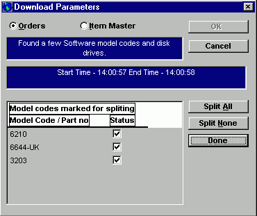
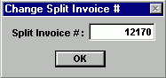

The above dialog box appears if, when downloading an order from Oracle, the IIG recognizes certain model codes that have been identified as needing to ship on a separate invoice.
You have the choice to Split All, Split None or do a partial split by checking or unchecking the individual boxes next to the model codes.
After determining which models, if any, should be split from the main invoice, click on done. The following prompt will appear with a suggested number to use for the new invoice:

You can use the suggested invoice number or enter a different number. Clicking on OK will continue the download process. The models identified for splitting will download to the new invoice number (all the Header details from the original invoice will be copied to the new invoice). After the download is completed the IIG will display the Header & Detail screens for both the original invoice and the split invoice. At this point you can close the Header and Detail windows for the split invoice (they were automatically saved during the split process) and return to complete the Detail and Footer windows on the original invoice. Go back to the Detail Tutorial for additional information regarding the fields in the Detail window.
Go back to Detail